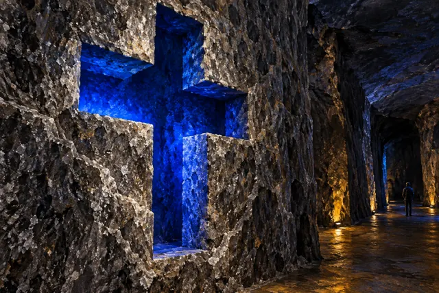
Catedral de SalUn templo subterráneo tallado en la roca salina.
Ilustración IA · revisión pendiente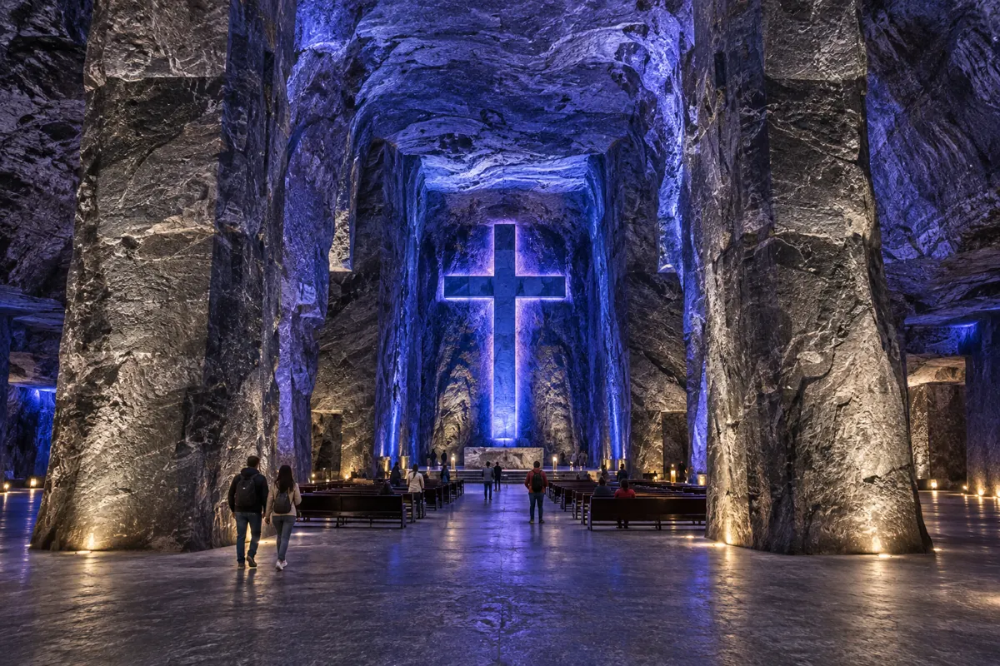
BORRADOR EDITORIAL PRIVADO · Imágenes 11/11 · resultados pendientes de aprobación · Sin importación, publicación ni aprobación.
Una catedral bajo tierra y un centro histórico para caminar.
La sal fue parte del intercambio muisca antes de la colonización española. La fundación colonial de Zipaquirá data de 1600. Su patrimonio salinero convive con plazas, arquitectura y la memoria escolar de Gabriel García Márquez; la actual Catedral de Sal abrió en 1995.

Catedral de SalUn templo subterráneo tallado en la roca salina.
Ilustración IA · revisión pendiente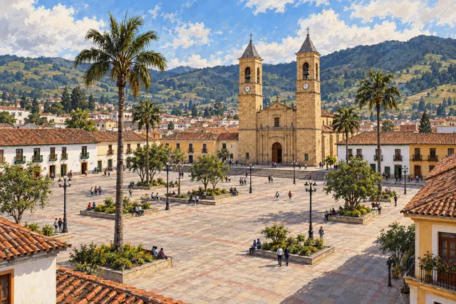
Plaza de los ComunerosEl corazón histórico, entre la catedral y edificios patrimoniales.
Ilustración IA · revisión pendiente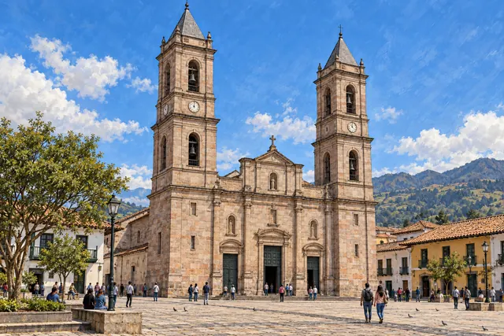
Catedral DiocesanaEl gran templo de piedra frente a la plaza principal.
Ilustración IA · revisión pendiente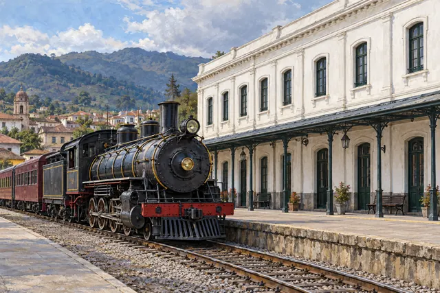
Estación del TrenArquitectura ferroviaria en la llegada del tren turístico.
Ilustración IA · revisión pendiente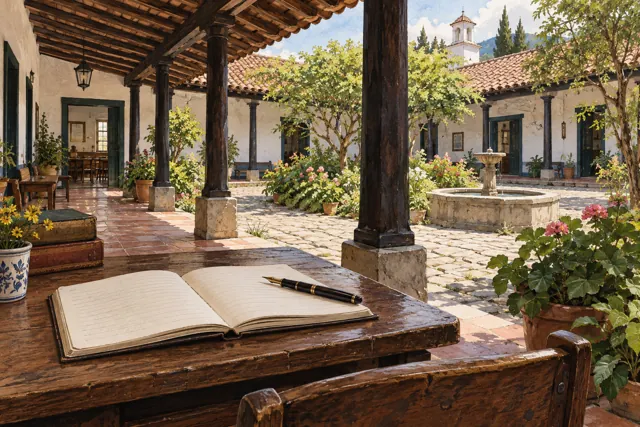
El Colegio de GaboLa memoria de los años escolares de Gabriel García Márquez.
Ilustración IA · revisión pendiente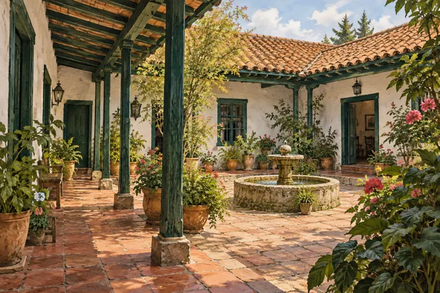
Casa Museo Quevedo ZornozaUna casa para acercarse al patrimonio musical de la ciudad.
Ilustración IA · revisión pendiente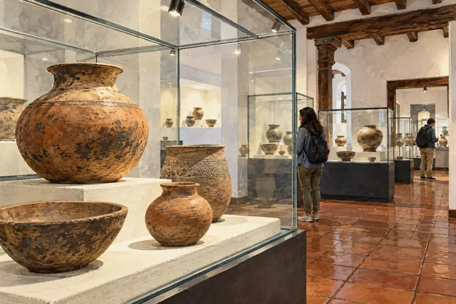
Museo ArqueológicoPiezas y relatos para conocer el pasado prehispánico.
Ilustración IA · revisión pendiente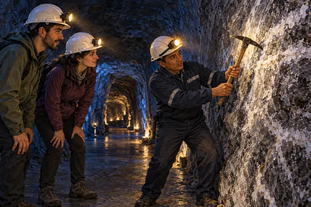
Experiencia mineraConoce la extracción de sal en una actividad organizada.
Ilustración IA · revisión pendiente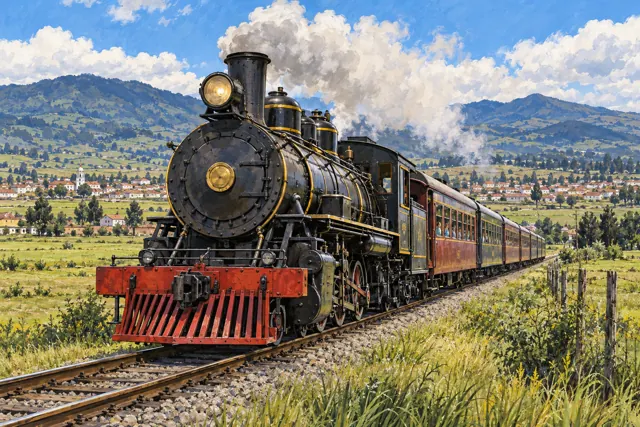
Paseo en tren turísticoRecorre en tren los paisajes de la sabana.
Ilustración IA · revisión pendiente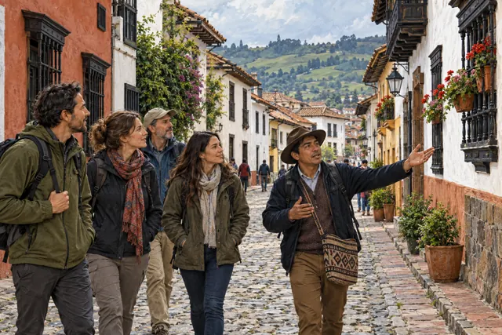
Tour urbano patrimonialDescubre plazas y patrimonio en un recorrido guiado.
Ilustración IA · revisión pendienteAn underground cathedral and a historic centre to explore on foot.
Salt supported Muisca exchange before Spanish colonisation. Zipaquirá’s colonial foundation dates to 1600. Its salt-making heritage shares the city with historic squares, architecture and memories of Gabriel García Márquez’s school years; the current Salt Cathedral opened in 1995.
An underground sanctuary carved into salt rock.
Ilustración IA · revisión pendienteThe historic heart, framed by the cathedral and heritage buildings.
Ilustración IA · revisión pendienteThe landmark stone church facing the main square.
Ilustración IA · revisión pendienteRailway heritage at the tourist train’s arrival point.
Ilustración IA · revisión pendienteDiscover the memory of Gabriel García Márquez’s school years.
Ilustración IA · revisión pendienteA house devoted to the city’s musical heritage.
Ilustración IA · revisión pendienteObjects and stories that explore the pre-Hispanic past.
Ilustración IA · revisión pendienteDiscover salt extraction in an organised activity.
Ilustración IA · revisión pendienteTravel through the savanna landscapes by train.
Ilustración IA · revisión pendienteDiscover squares and heritage on a guided walk.
Ilustración IA · revisión pendienteUma catedral subterrânea e um centro histórico para percorrer a pé.
O sal integrou as trocas muiscas antes da colonização espanhola. A fundação colonial de Zipaquirá data de 1600. Seu patrimônio salineiro convive com praças, arquitetura e a memória escolar de Gabriel García Márquez; a atual Catedral de Sal abriu em 1995.
Um santuário subterrâneo escavado na rocha salina.
Ilustración IA · revisión pendienteO coração histórico, entre a catedral e edifícios patrimoniais.
Ilustración IA · revisión pendienteO grande templo de pedra diante da praça principal.
Ilustración IA · revisión pendientePatrimônio ferroviário na chegada do trem turístico.
Ilustración IA · revisión pendienteA memória dos anos escolares de Gabriel García Márquez.
Ilustración IA · revisión pendienteUma casa para conhecer o patrimônio musical da cidade.
Ilustración IA · revisión pendientePeças e relatos para conhecer o passado pré-hispânico.
Ilustración IA · revisión pendienteConheça a extração de sal em uma atividade organizada.
Ilustración IA · revisión pendientePercorra de trem as paisagens da savana.
Ilustración IA · revisión pendienteDescubra praças e patrimônio em um passeio guiado.
Ilustración IA · revisión pendiente